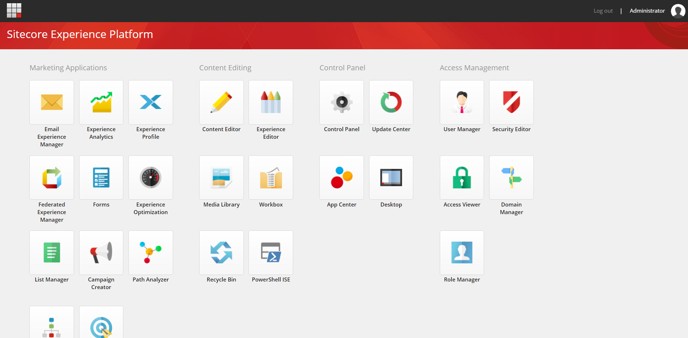
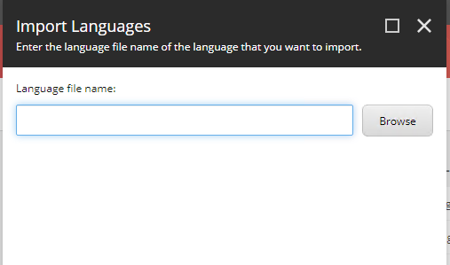

3.5. 日本語リソースのインポート¶
ここでは Sitecore に日本語リソースをインポートする方法を紹介しています。
3.5.1. 日本語リソースファイルの準備¶
日本語リソースに関しては、Sitecore のダウンロードサイトからリソースファイルのダウンロードが可能です。
ページの下のほうにある、Client translations の一覧にある Japanese (ja-JP) のファイルをダウンロードしてください。
また一部の日本語リソースを修正するためのファイルを、GitHub の SitecoreaJapan/InstallScript のリポジトリに公開しています。以下のファイルをダウンロードしてください。
ja-jp-update.xml
3.5.2. 日本語リソースの追加¶
インストールをした Sitecore の環境に管理者としてログインをしてください。
{kind=link}
Desktop を起動します
右下に表示されている master をクリックして core に切り替えます

左上にある Sitecore メニューをクリックしてスタート画面に戻ります。

Controle Panel を開きます
Localization にある Add a new language をクリックします
{kind=link}
一覧から Japanese (Japan) : 日本語(日本) を選択します。

codepage、Encoding および iso-2022-jp に関しては標準の設定のままで次のダイアログに移動します。
Spellchecker file name は空欄のまま次に進みます
追加が完了します
これで UI のリソースを追加する言語を追加することができました。続いて、コンテンツを追加できるように、データベースを戻します。
スタート画面で Desktop を選択
右下のデータベースを core から master に戻します。
Controle Panel を開いて、もう一度 Localization にある Add a new language から日本語を追加します（手順は上記と同じです）。
これでデータベースとして日本語のデータを扱うことができるようになりました。
3.5.3. 日本語リソースのインポート¶
Controle Panel を開いて、今度は Localization にある Import Language を開きます。
{kind=link}
ファイルの選択画面が表示されます。Browse をクリックします。
{kind=link}
Web サーバのディレクトリが表示されます。この画面からアップロードをすることができますが、今回は手間を省くために以下のような作業を実施します。
インストール先の C:\inetpub\wwwroot\93sc.dev.local\temp のフォルダを開きます
ここにダウンロード済のファイルを展開します（ Sitecore 9.3.0 rev. 003498 (ja-JP).zip のファイルの中にある ja-jp.xml を temp にコピー）
ディレクトリに2つのファイルが入っているのを確認します

Sitecore の管理画面に戻ります
temp フォルダの中に2つファイルがあることを確認します
{kind=link}
ja-jp.xml のファイルを選択します
{kind=link}
Next をクリックして言語を確認します。ここでは Japanese(Japan):日本語(日本) のみが選択肢として表示されます。

データベースとして core を選択（デフォルト）のまま進めてインポートを開始します。

上記の手続きを、ja-jp-update.xml に対しても同じ手続きでインポートをします。